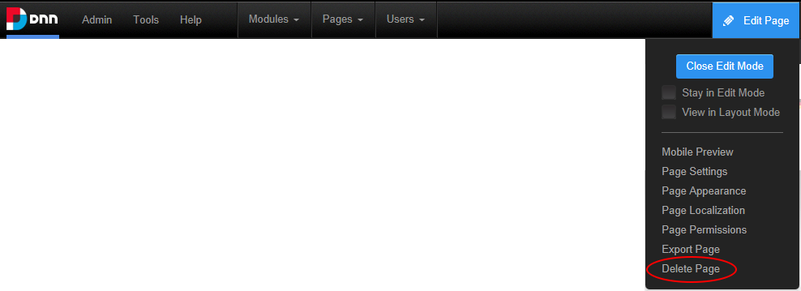

How to delete a page from a site. Pages set as either the Splash page, Home page, Login page, or the User page cannot be deleted until the setting is removed. The last visible site page can also not be deleted. Deleted pages are stored in the Recycle Bin where they can be restored or permanently deleted by authorized users.

Tip: You can also delete a page via Page Settings.